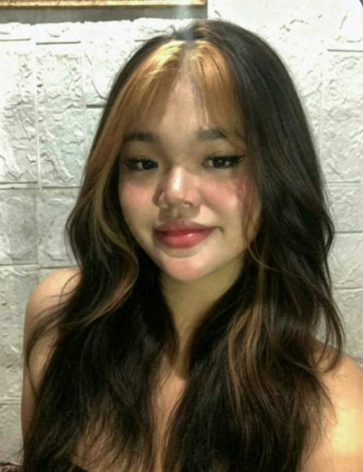

MY STORY
About Me
Get to know more about me and my journey.
About Me
My name is Rachel B. Zuela, and my nickname is Chichi. I am a first-year Bachelor of Science in Information Systems student at Naga College Foundation, under BSIS 1A. I am a simple, friendly, and hardworking student who enjoys discovering new things and learning different skills. I believe that education is an important part of achieving my dreams.
I am interested in technology, especially computers and programming. As an Information Systems student, I want to improve my knowledge and develop my skills in the world of technology. I also enjoy taking pictures, listening to music, and spending time doing things that make me happy. I know that learning takes time, but I am willing to work hard, face challenges, and continue improving myself.
Quick Facts
- Full Name: Rachel B. Zuela
- Nickname: Chichi
- Program: BS Information Systems
- Year and Section: 1st Year - BSIS 1A
- School: Naga College Foundation
- Hometown: [Your City or Town]
- Languages: [Your Languages]
Education
Junior High School
Carolina National High School
Senior High School
Carolina National High School
College
Naga College Foundation
BS Information Systems - BSIS 1A
My Hobbies and Interests
My Favorites
Favorite App: Social Media, VS Code
Favorite Subject: Introduction to Computing
Favorite Song: Iced Coffee or Mango Shake by Hev Abi
Favorite Food: Something Sweet
Favorite Website: Chrome
Three Fun Facts About Me
- I enjoy discovering new things.
- I love taking pictures.
- I am willing to learn new things.
My Photos
